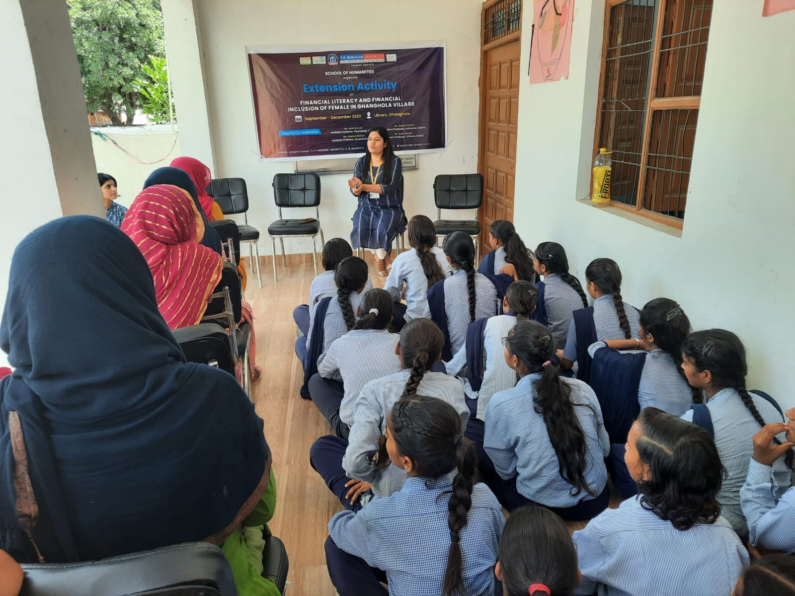
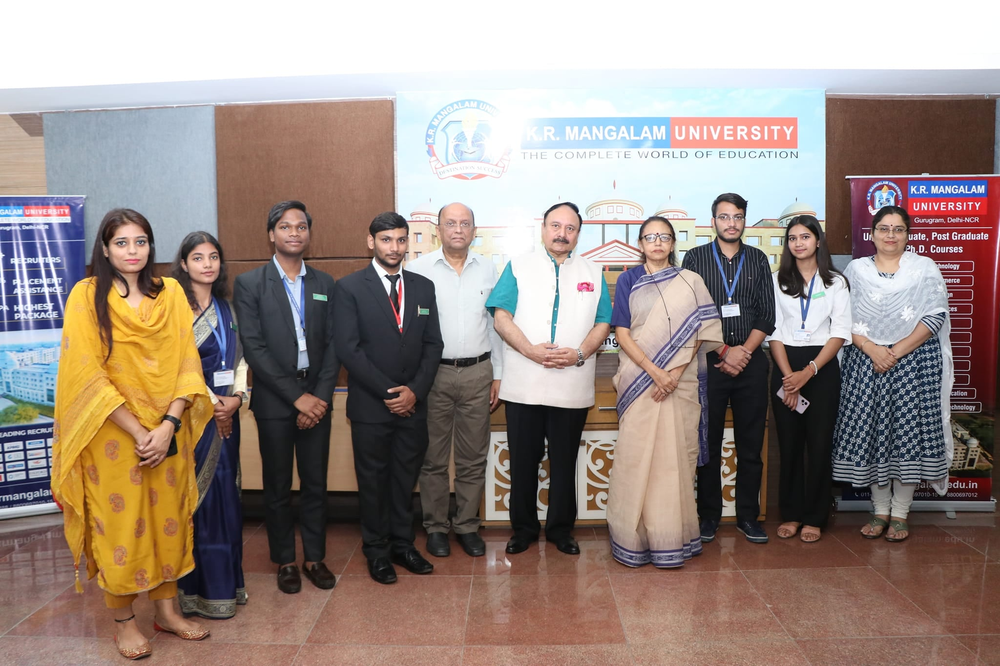

- We’re on your favourite socials!


K.R. Mangalam University Expert's Review and Verdict
Campus at a Glimpse
Contemplating K.R. Mangalam University for your academic journey? This Haryana-based private university presents an array of enticing attributes. Its contemporary campus is equipped with state-of-the-art facilities, fostering a culture of innovation. Collaborations with industries offer prospective career insights, and an array of courses caters to diverse interests. The university is dedicated to delivering top-notch education with a diverse range of 100+ undergraduate and postgraduate degrees. Students with aspirations in fields such as architecture, hotel management, allied science, engineering, legal studies, humanities, or agricultural science can delve into a myriad of opportunities. Notably, the university is committed to providing equal opportunities to deserving students from economically disadvantaged backgrounds through multiple scholarship programs. While the institution undoubtedly excels in areas like infrastructure, course variety, and campus facilities, it's essential to note that concerns may arise when considering the placement statistics.
Yet, let's take a realistic look at both the positives and areas that might need improvement. Online feedback is varied, with some students lauding the faculty and the conducive learning environment. On the flip side, there are mentions of occasional disorganization and an at times overly strict atmosphere, expressing the need for awareness in this regard. In comparison to other universities in Haryana, K.R. Mangalam University sets itself apart by prioritizing global connections and industry affiliations. However, it might lack the expansive, sprawling campuses often associated with more established institutions. As you weigh your options, acknowledging both the strengths and potential drawbacks can aid in making an informed decision about your academic journey.
Let us evaluate these aspects comprehensively that will enable you to make a well-informed decision about the university's suitability for your academic pursuits.
K.R. Mangalam University’s Ranking
K.R. Mangalam University has earned notable fame for its educational quality and innovation. It ranked No. 1 in Haryana by the EW Grand Jury and Times B-School Survey 2024. The university placed well in national rankings like IIRF and Outlook. It was awarded such titles as Best B-School at the Education Leaders Conclave, and its school of law and school of management attained top ranks. Also, it was given a 3-star rating by AICTE for its excellence in innovation, reflecting its focus on quality education and research.
- Top Exemplary Researcher University: Ranked No. 1 in Haryana by the EW India Higher Education Grand Jury Ranking 2024–25.
- Times B-School Survey 2024: Ranked No. 1 among all B-Schools in Haryana.
- IIRF 2024: Ranked 77th among Top Private Universities in India.
- Outlook 2023: Ranked 117th under the 'Engineering (Private)' category.
Recent Awards & Recognitions
- BW Legal World Awards: School of Legal Studies secured the 9th position nationally.
- Best B-School Award: Received at the Education Leaders Conclave and Awards.
- 3-Star Rating on Institute’s Innovation Cell (IIC): Awarded by AICTE for excellence in Innovation and Research.
- Brilliance Badge B-School: School of Management and Commerce ranked in the Gold Band with Grade 'A'.
- OBE Rankings 2023: Ranked in the Gold Band and A Grade, honored with a Certificate of Achievement and Recognition.
Our Take:
For the University, securing recognition from the NIRF is paramount, given that it is widely regarded as a top honour in the realm of education. The NIRF ranking holds significant influence over students' decisions when choosing an educational institution. In many cases, students rely heavily on NIRF ranks as a decisive factor in shortlisting colleges. While a list of other awards may be impressive, we believe that it is not sufficient for a mass population of aspirants who prioritize institutions based primarily on their NIRF ranking. Thus, efforts by the University to attain a favourable position in the NIRF rankings can positively impact its appeal and desirability among prospective students.
Inconsistent Participation in NIRF, the National Institutional Ranking Framework, is not obligatory for universities on an annual basis. The decision to provide data for ranking rests with each institution, leading to variations in their participation over the years. K.R. Mangalam University, for instance, may choose to submit data for ranking in some years and abstain in others.
Several Possible Interpretations may explain the absence of rankings:
- Strategic Choice: Universities might opt out of recent NIRF rankings due to concerns about their performance or a preference to concentrate on alternative metrics for enhancement.
- Ineligibility: NIRF imposes eligibility criteria, and universities failing to meet these standards, such as the minimum number of graduates, would not secure a ranking.
- Data Issues: Errors or delays in the submission of university data could impede their inclusion in the rankings.
K.R. Mangalam University’s Academia & Batch
K.R. Mangalam University adopts a learner-centric approach to enable students to sharpen their academic skills. The institute has an annual intake of 10000+ students across its 11 affiliated schools. The varsity is fostering quality education and helping students grow in their respective fields of study under the mentorship of 600+ vibrant faculties. For learners’ overall development, the institute offers liberty to students to choose specialization as per their passion and interest, which hails from value-added courses to open electives.

Our Take:
The university boasts a seasoned faculty renowned for its extensive expertise in diverse domains, as emphasized by numerous reviews. Students appreciate the institution's commitment to integrating industry trends and practical applications into the curriculum, ensuring relevance to real-world scenarios. The university stands out for its diverse array of programs spanning various disciplines, catering to a broad spectrum of student interests. However, a few concerns have surfaced in student reviews. Some express occasional worries about inconsistent faculty engagement and teaching method variations. Additionally, despite the university's encouragement of research projects and research papers, online reviews hint at comparatively fewer research opportunities compared to other institutions.
Though gathering precise data about the average batch sizes at K.R. Mangalam University proves challenging, given the confidential nature of such data. However, gleaned from various student reviews, there are indications that the university might have smaller batch sizes in comparison to larger state universities.
K.R. Mangalam University’s Infrastructure
K.R. Mangalam University provides top-notch facilities to help students enjoy their campus life full-fledged and improve their learning experience. Find out more about the infrastructure below:
Library
The university houses a grand centralized library that contains an extensive range of books, journals, research papers, magazines, and catalogs. It has swift internet access that allows students and faculties to get access to online resources. Photocopy machines are installed at the library which help students to get hold of important study materials.
Classrooms
The classrooms are spacious and built in the form of an Amphitheater style. The rooms have centralized air conditioners keeping the comfort of large-scale accommodation in mind. Each of the classrooms is designed with an audio-visual setup to ensure learners gain benefits from the lectures.
Cafeteria
Be it unwinding those study loads or enjoying relaxing moments with friends, the cafeteria is a perfect place. The cafeteria serves delicious food items and has a Cafe Coffee Day (CCD) outlet. It is quite spacious and can accommodate up to 100 people. Meals are prepared by strictly adhering to hygiene guidelines.
Hostel
The university provides top-class hostels for students taking admission from different cities or countries to pursue higher education. There are separate spaces for male and female students. Each of the rooms is equipped with beds, chairs, study tables, cupboards, fans, and centralized AC.
| Hostel Fees | INR 1.6 LPA |
| Hostel Security Deposit (Refundable) | INR 10 K |
| Transport fee (Annually) | INR 44K |
| Suttle Service Cost (Annually) | INR 22K |
Sports Complex
To help young minds nurture skills apart from education, the university has built a beautiful sports complex. Students can participate in various kinds of recreational activities like table tennis, badminton, football, and many more. Cultural and sports fests are organized from time to time helping students achieve feats in extra-curricular activities.
Gym
The K.R. Mangalam University encourages students to follow a proper regime by creating fitness centres within the campus. Regular training on cardio combat and aerobic pump tone is conducted by experienced trainers.
Moot Court
Law students can get great assistance from moot courts for their practice sessions. These courts are pretty spacious and designed to accommodate around 200 students.
Transport
The university location is well-communicated and properly connected to the main road. Students and teachers can avail of the shuttle service which operates from Rajiv Chowk and the HUDA metro station.
Our Take:
K.R. Mangalam University appears to have invested significantly in cultivating a contemporary learning environment with a strong emphasis on practical learning amenities. Despite this commitment, like any educational institution, there exist potential areas for enhancement, and the quality of infrastructure may vary across different specializations.
When assessing K.R. Mangalam University in comparison to other universities in Haryana, several factors come into play. Firstly, being a relatively recent addition to the academic landscape as a private university, K.R. Mangalam is likely to boast more modern infrastructure when compared with some of the older, well-established government-funded universities in the region. Secondly, we believe that the specialized focus of certain universities might contribute to superior infrastructure in particular fields, such as agriculture or engineering, owing to their historical background or dedicated funding. Lastly, it's worth considering the campus size, as K.R. Mangalam may have a more compact campus in contrast to the expansive grounds of some of the older universities that are based in Haryana. This difference in campus size can influence the overall student experience and available resources.
K.R. Mangalam University's Internships & Placements
K.R. Mangalam University has a dedicated placement cell responsible for organizing pre-placement training programs to help students improve their professional skills. As per the placement statistics gathered from the varsity, the highest rate of internship and placement opportunities were bagged by students hailing from MBA, BBA, BTech, and LLB streams.

Internship
The university organizes summer internship programs to prepare young minds for prospects. It is generally held before final campus recruitment drives. Students can get the extensive scope to become industry-ready and generate a fair idea concerning the expectations of recruiters.
Placements
The training and placement cell aims at bridging the gap between the students and prospective recruiters. The Corporate Resource Center at K.R. Mangalam University has undertaken pathbreaking initiatives to help students bag lucrative job offers.
Placement process at a glance:
According to the varsity, a record-breaking 100% placement rate has been achieved and they highly gave credit to the smooth and effective placement process. Let’s understand the process from the flow chart below:

Fig 1: Placement Process
K.R. Mangalam University’s Diversity and Demographic Representation
Based on the available information, it seems that K.R. Mangalam University has a moderate level of diversity, drawing students from both Haryana and various states in India. However, the precise ratio remains unclear. Considering its location in Haryana, it's likely that a considerable portion of the student body hails from within the state. To measure the university's commitment to inclusivity, it would be beneficial for students to explore statements on its website that emphasize diversity and inclusion. Private universities often use such messaging in their marketing to create a positive image and foster a welcoming environment for students from different regions.
Our Take:
One aspect distinguishing newer private universities, such as K.R. Mangalam, from the well-established state-funded institutions in Haryana is the local population bias. The latter may exhibit a higher concentration of students from within the state, as a result of historical admission trends and policies. In contrast, private institutions, particularly those in their early years, often put in extra effort to attract students from diverse geographic backgrounds. This strategy not only enhances their reputation but also contributes to a more varied campus experience.
It's essential, however, not to solely rely on the percentage of out-of-state students as a measure of a university's inclusiveness. A lower proportion doesn't necessarily signify a less welcoming environment; other factors also play an important role in determining the overall atmosphere.
K.R. Mangalam University Placement Statistics
Find the salary packages and recruiter participation in phase 1 placement in 2023 from the table below:
| Components | Data |
|---|---|
| Placement rate | 92% |
| Total recruiters | 700+ |
| Total no. of job offers | 1000+ |
| Highest package | INR 56.6 LPA |
| Average package | INR 7.25 LPA |
Highlights on placement report for 2021-23:
- MBA students bagged an average package of around INR 7.5 LPA from YesBank
- Around 30% or more students receive lucrative job offers each year
- BTech students with AI & ML specialization have succeeded in securing a package of INR 9.5 LPA from HCL
Our Take:
Undoubtedly K.R. Mangalam University provides 100% assistance in the pre-placement process that enables students to boost their skills and confidence. Well, we believe students choosing BTech, BBA or other technical courses are in a win-win situation however humanities or education stream seems to be the neglected one. The varsity requires to focus on internship and placement in this stream to help students make the right career choices.
K.R. Mangalam University's Faculty/College Administration & Management
As per the university authorities, the institute boasts of a perfect student-to-faculty ratio however our analysis revealed a completely different scenario. After thorough research, it was found for over 3500+ students, there are only 151 faculty which is a huge disparity.

K.R. Mangalam University strives to offer the best possible exposure, educational standards, and campus safety with the assistance of UGC and AICTE-recognised committees. Some of the distinctive cells acting as a helping hand for students have been discussed below:
- Anti-Discrimination cell: Aligning with the UGC regulation of equity in higher education, the varsity formed this cell to help students facing discrimination. Any discrimination against SC/ST or OBC students will be liable to be punished.
- KRMU Internal Complaint Committee: It aims to provide a safe campus environment for female candidates by taking strict action against the offenders.
- Student discipline committee: This committee is solely responsible for maintaining the dignity, decorum, and discipline of the university.
The varsity adopts an ERP system to help stream the academic journey of the students. The aspirants can avail of the following facilities or assistance from the SERSOFT system.
- Course enrollment
- Class Schedule
- Attendance
- Program
- Result
- Fee details
- Hostel or transport details
- Important notification
Parents and students are provided the complete login details so that they can access it from the university website when the need arises. The faculty comprises some of brilliant and qualified individuals. Well, students' opinion differs as for some streams the standard of the teaching staff is average.
Our Take:
The college’s committee and student support cells are a messiah for the students however certain amendments to staff recruitment seem to be the need of the hour. To ensure learners fulfil their academic endeavours and embark on the right path, updates in faculty recruitment should be taken care of.
K.R. Mangalam University Location
K.R. Mangalam University is nestled in Sohna Road, Gurugram in Haryana. The nearest railway station is around 29 km away from the campus. Students willing to commute via metro have to cover a distance of 25km to reach the university from the Sector 55-56 metro station. Those residing within a distance of 3 to 4kms can take a bus from Sohna bus depot. Cabs, autos, and shuttle services are easily available.
Our Take:
Pros:
- Delhi NCR Proximity: Benefit from the abundant resources, internships, industry visits, cultural events, and potential job prospects available in the greater Delhi NCR area.
- Serene Setting: Enjoy a quieter, greener campus environment, providing an ideal backdrop for focused learning without the distractions of major cities.
- Corporate Hub Access: Gurugram's status as a growing corporate hub offers valuable networking opportunities and easier access to companies, enhancing placement possibilities.
Cons:
- Distance from Major City Centers: Students may miss the vibrant atmosphere and conveniences of residing directly within a major metropolitan area like Delhi.
- Limited Local Amenities: Immediate surroundings may offer fewer options for entertainment, shopping, or dining compared to a more prominent city location.
- Transportation: Commuting to Delhi or other parts of Gurugram may require a longer travel time, necessitating reliance on university-provided or private transportation options.
K.R. Mangalam University’s: Expectation vs Reality CollegeDekho Verdict
The university's website highlights its modern campus, featuring state-of-the-art classrooms, labs, and workshops, promising students a well-equipped learning environment. They underscore their commitment to aligning curriculum with industry trends to better prepare students for successful careers. Additionally, the university boasts international collaborations, suggesting opportunities for global learning experiences. However, a closer look reveals that while the campus generally receives positive reviews for good infrastructure, there are occasional concerns about maintenance in specific areas. Feedback on K.R. Mangalam University's courses and curriculum varies, with some students noting inconsistent faculty engagement and teaching methods. Information about international collaborations is scarce, and student reviews seldom mention specific opportunities. Furthermore, the university's claim of strong placements is challenged by the lack of readily available placement statistics on its website, making it difficult to verify their assertions. Student reviews present mixed experiences, with some praising the placement cell, while others express concerns about support and job quality.
Final Verdict: K.R. Mangalam University presents appealing features such as state-of-the-art facilities and a variety of programs. However, the availability of comprehensive information is limited, resulting in a somewhat ambiguous perception. To make an informed decision, it is advisable to engage in diligent research, consult student forums, and reach out directly to the university. By doing so, a more comprehensive understanding can be obtained. It is crucial to prioritize individual preferences and weigh the pros and cons of K.R. Mangalam University against other academic institutions. This comparative analysis will aid in determining the most suitable fit for one's academic and career goals.
Final Review CheckBox!
| Yay! | Nay! |
|---|---|
| IT Infrastructure | Unstructured curriculum |
| Swift internet connection | Poor student-to-faculty ratio |
| Centralised AC in classrooms and labs | Untrained faculty |
| Better industry exposure through pre-placement workshops | There are not enough internship programs for the humanities stream |
| Decent placement rates | Far away location from the city |
K.R. Mangalam University Reviews and Rating
Why to choose K.R. Mangalam University?

4.6
(670 Verified Reviews)
Share your college experience
Earn unlimited cash rewards  Earn up to ₹10 for every approved college review. Refer your friends to write reviews and earn ₹10 for each of their approved reviews too.
Earn up to ₹10 for every approved college review. Refer your friends to write reviews and earn ₹10 for each of their approved reviews too.

Student Feedback and Rating on K.R. Mangalam University
Enrollment : 2024 | 1 week ago
Nice faculty and well built infrastructure
Overall Overall, my experience at K.R. Mangalam University has been good. The university provides a decent academic environment, supportive faculty, good infrastructure, and opportunities for students to participate in various academic and extracurricular activities. Overall, I would rate the university 4 out of 5 based on my experience as a student.
Placement The university provides placement and career-support opportunities through its placement cell. Students get opportunities to participate in recruitment drives, internships, training sessions, and industry-oriented programs. Placement opportunities can vary depending on the course, skills, and performance of the student. Overall, the placement support is satisfactory, but students should also focus on developing their own technical and communication skills.
Infrastructure The infrastructure of Kr mangalam university is very well. All classrooms have electronic working displays. Practical labs have most of the equipments needed.
Faculty The faculty members are generally supportive and knowledgeable in their respective subjects. Teachers explain concepts clearly and are approachable when students need help with academics. Many faculty members also encourage students to participate in practical activities, projects, seminars, and other academic events. Overall, the faculty is supportive and helpful, although the experience may differ from department to department.
Hostel The hostel facilities are reasonably good and provide students with a comfortable place to stay on campus. Rooms are generally maintained properly, and facilities such as food, security, Wi-Fi, and common areas are available. The hostel environment also allows students to interact with classmates and make new friends. Overall, the hostel experience is comfortable and satisfactory
Enrollment : 2025 | 2 weeks ago
great college experience
Overall Overall my experience at KR Mangalam University has been good and enriching. The university provides various opportunity for students to learn, participate in activities, and develop their skills. The faculty members are supportive, and the campus environment encourage both academic and personal growth.
Placement Overall my experience at KR Mangalam University has been good and enriching. The university provides various opportunity for students to learn, participate in activities, and develop their skills. The faculty members are supportive, and the campus environment encourage both academic and personal growth.
Infrastructure Overall my experience at KR Mangalam University has been good and enriching. The university provides various opportunity for students to learn, participate in activities, and develop their skills.
Faculty Overall my experience at KR Mangalam University has been good and enriching.The faculty members are supportive, and the campus environment encourage both academic and personal growth.
Hostel great college experience with good learning opportunity Overall my experience at KR Mangalam University has been good and enriching. . The faculty members are supportive, and the campus environment encourage both academic and personal growth.
Enrollment : 2025 | 3 weeks ago
Rating faculties for their chat
Overall The faculty is knowledgeable, supportive and approachable. They explain concepts clearly and encourage students to participate and improve. They are always available.
Placement The college provides descent placement opportunities, with supports from the placement cell, career guidance and opportunities to connect with various companies
Infrastructure The college has good infrastructure with well equipped classrooms a clean campus and mordern faculties, and a comfortable environment for students . Good
Faculty The faculty is knowledgeable , supportive and approachable. They explains concepts clearly and encourage students to participate and improve . They are also frank with us.
Hostel The hostel provides a comfortable and safe environment with clean rooms and basic faculties, good security , and a friendly atmosphere for students . Good
Enrollment : 2025 | 3 weeks ago
Very good university
Overall Begining with infra, it is good, the environment is good free from bullying and ragging, the faculties are supportive , the course curriculum is good, subjects are skill based and not traditional, a good focus on skills rather than just books and academics.
Placement The university offers placement frequently. Companies vist often and interview students, manier students get selected for jobs as well as for internships by good companies every now and then.
Infrastructure The infra is good with proper lighting and Ac instilled in every room, also the greenery is worth watching,giving a fresh and vibrant feel.A big playground provides good space for cricket, badminton, volleybaal, football.
Faculty The faculty is amazing, everyone is so supportive and encouraging. They give their best to make us understand rather than leaving students on wriggle with the syllabus and academics alone.
Hostel The hostel is good, girls and boys hostel is different, they have good security, rooms are attached with bathrooms and food is good, also there is gym facility.
Enrollment : 2025 | 3 weeks ago
Review for the college
Overall This college is very well in academics sports facilities and having good infrastructure including library, sports arena , caffetaria etc. also it is very well in overall development for the students
Placement The kr Mangalam university provides placements to the students who are eligible to get into it. Also the kr Mangalam university has provided the placements of ₹ 56 lpa and has been the highest placement offered till now .
Infrastructure The kr Mangalam university is having good infrastructure including the libraries, classes, cafeteria, sports arena , and also the labs . The overall infrastructure is good here.
Faculty The faculties in kr managalm university are very well trained and have good experience. Also they interact very well with the students and help them with their academics and also help them to create their doubts when the feel so .
Hostel The hostel is also very well maintained in the kr Mangalam university. The students are having very good mess to eat food . The good roommate's. Overall development a well maintained in hostel.
Enrollment : 2025 | 3 weeks ago
A great college experience with good learning opportunity
Overall my experience at KR Mangalam University has been good and enriching. The university provides various opportunity for students to learn, participate in activities, and develop their skills. The faculty members are supportive, and the campus environment encourage both academic and personal growth.
Placement the university provides students with placements opportunity and career guidance to help them prepare for their professional journey. various companies visit the campus, and student are also provided with training, workshops and guidance to improve their skills and confidence for interview.
Infrastructure the college has good infrastructure with modern classroom, well equipped facilities, libraries and spaces for students to learn and participate in differen activities. the campus environment is clean and comfortable, making it a good place for both academic and extracurricular activities.
Faculty the faculty members are supportive, approachable and knowledgeable in their respective subject. they make efforts to explain concepts clearlu and encourage students to participate in class discussion and activities. they are also helpful in guiding students with academic and personal development.
Hostel the hostel provides a comfortable and safe environment for students . the rooms and basic facilities are well maintained, and the. hostel offers a convenient living space within or near the university campus. it also gives students the opportunity to interact with others nd enjoy a sense of community.
Enrollment : 2025 | 3 weeks ago
Learn Beyond Classrooms, Grow Through Experience.
Overall My overall campus experience has been positive and enriching. The campus provides a friendly environment with opportunities to intract with peers and partici[pate in cultural, academic, and extracurricular activities.
Placement The faculty provides useful career guidance, interview preparation, and recruitment opportunities by collabrating with various secondary schools anf higher education institutions.
Infrastructure The university has good and well maintained infrastructure that supports both academic and extrscurricular activities. Classrooms are spacious and equipped with modern teaching facilities.
Faculty The faculity membeers are approachable, supportive and enough knowlwdgeable. Teachers used interactive teaching methods and accessibility may vary among faculty members, and some could incorporate more practical activities, technology, and individualized feedback.
Hostel The hostel provides a comfortable and secure living environment for students. Rooms and common areas are reasonably maintained, and students have access to essential facilities such as dining, recreational spaces, wi-fi, and basic security.
Enrollment : 2023 | 1 month ago
Decent college not that bad of an experience
Overall There are certain good opportunities for students but there are areas that could definitely be improved, especially regarding placements. Some processes can get technical and require students to follow up repeatedly
Placement Placements is an area where where the College can improve significantly as the opportunities is presented are not particularly impressive compared to expectations
Infrastructure Infrastructure is decent and the campus has a reasonably good environment however management and administration could be more responsive to students concerns
Faculty Faculty is decent some are genuinely supportive and helpful while others could be more approachable and engaging there is room for improvement in teaching methods
Hostel Personally i am a day scholar but i have heard hostel students face a lot of concerns regarding food and electricity etc, although there are constantly increasing construction
Enrollment : 2023 | 1 month ago
Honest Review of B.A. LL.B. at K.R. Mangalam University
Overall KR MANGALAM University has good infrastructure and good education system and good administrative system you can trust on it whenever you decide to come.
Placement Every year there's a job job opportunities where students come and gets interviewed by the bracket of companies and they get place there and there is a lot other things the University has a student to do.
Infrastructure Campus facilities are good and labs are also in good condition one can learn there and have a good experience also all the instruments and lab requirements are complete.
Faculty All the faculties have good and of good knowledge easy to communicate and easy to understand they way of method of teaching is also good all teachers are dignified and they all are UGC NET qualified.
Hostel Both Facilities being provided to the students for the day scholar bus facility and for the hostelers there is hostel facility for which they can accommodate there with an safe environment.
Enrollment : 2024 | 1 month ago
Great Campus and Overall College Experience
Overall KR Mangalam University provides a good overall college experience with a pleasant campus, supportive faculty, and a variety of academic and extracurricular activities. The campus environment is friendly and provides students with opportunities to learn beyond the classroom. The infrastructure and facilities are quite good, and the university regularly organizes events workshops, and activities that help students develop their skills and confidenceFaculty members are generally helpful and approachable Overall it is a good place for students who want a balanced college life with academics activity and personal developmet
Placement KR Mangalam University provides students with opportunities to prepare for placements through career guidance, training sessions, workshops, and placement activities. Students get exposure to different companies and recruitment processes, which can help them understand industry requirements. The university also encourages students to develop communication, technical, and professional skills. Overall, the placement support is useful for students who actively participate in training and prepare consistently for their career.
Infrastructure KR Mangalam University has a well-maintained and modern campus with good infrastructure and facilities. The classrooms, laboratories, library, and other academic spaces provide a comfortable environment for students. The campus is spacious and clean, with facilities that support both academic learning and extracurricular activities. Overall, the infrastructure is one of the positive aspects of the university and contributes to a good student experience.
Faculty The faculty at KR Mangalam University is supportive, approachable, and knowledgeable. Teachers explain concepts clearly and are generally available to guide students whenever needed. They encourage students to participate in academic activities, workshops, and discussions. The teaching environment is positive and helps students improve their knowledge and confidence. Overall, the faculty members contribute well to the academic experience and provide useful guidance for students.
Hostel The hostel facilities at KR Mangalam University provide students with a comfortable and convenient living environment. The rooms and common areas are reasonably well maintained, and the hostel provides a suitable atmosphere for students to focus on their studies while enjoying campus life. The overall environment is friendly and convenient, making it easier for students to manage their academic and daily activities. Overall, the hostel experience is good and satisfactory.
Top Courses at K.R. Mangalam University
Related Questions
Similar Colleges
Explore More Engineering Colleges in Haryana
- By State
- By City